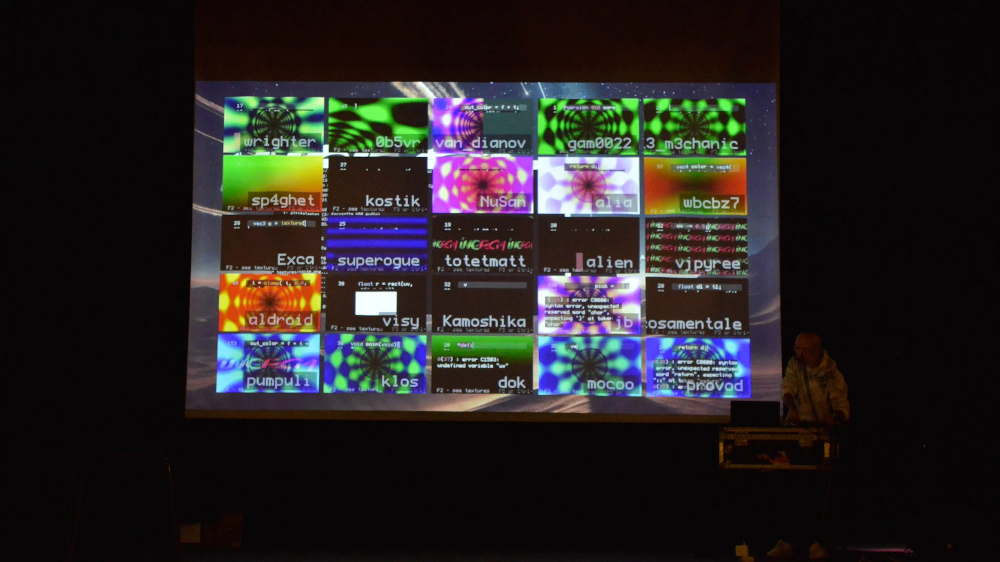

Experience the world's largest simultaneous online shader programming event, with over 25 live participants from all corners of the world participating live! Hosted at Inércia for the 4th year since it's inception. Playing music for the event we will have a live set by var.rho